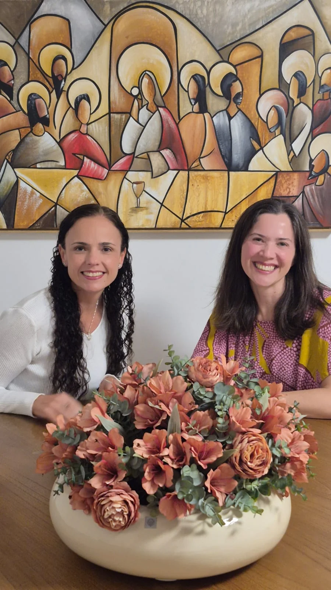

Relações
que aproximam
Olhar para as barreiras que dificultam relações saudáveis e cultivar a qualidade dos vínculos com quem importa.
UM ENCONTRO PRESENCIAL PARA MULHERES
Corpo, mente, coração e espírito.
Um convite a acolher sua história e expressar
sua essência com presença, leveza e alegria.
INTELIGÊNCIA ESPIRITUAL, EMOCIONAL E SISTÊMICA
Filha, mãe, profissional, líder, companheira. Entre tantas formas de estar no mundo, às vezes sentimos que precisamos nos dividir para caber.
A Imersão Inteireza é um espaço de acolhimento para integrar essas partes, reconhecer sua trajetória e abrir espaço para o que deseja florescer.
Incluir sua história. Transcender em direção ao novo.
Dois dias. Um encontro com você.
UM LUGAR PARA DESACELERAR
No alto da Lagoa da Conceição, em Florianópolis, um espaço de paz e tranquilidade integrado à natureza acolhe o nosso encontro.
Lagoa da Conceição · Florianópolis, SC
Ver localização (abre em nova aba)O QUE PODE FLORESCER
Um convite para cultivar uma vida
com conexão interior e propósito.
Olhar para as barreiras que dificultam relações saudáveis e cultivar a qualidade dos vínculos com quem importa.
Reconectar-se com sua essência e acolher as dimensões física, mental, emocional e espiritual da vida.
Levar a conexão interior para a vida prática e ampliar sua contribuição no mundo.
ESSE CHAMADO É PARA VOCÊ?
Que buscam mais propósito e realização, desejam cuidar das suas relações e estão dispostas a transformar o amadurecimento interior em atitudes no dia a dia.
DOIS MOVIMENTOS, UMA INTEIREZA
Olhar para o caminho que trouxe você até aqui. Integrar experiências e reconhecer o que a potencializa.
Dar espaço ao futuro: sua expressão pelo trabalho, pelo servir e pelas relações com as pessoas que importam.
Reflexões e vivências com abordagem fenomenológica e sistêmica, apoiadas nas 21 Habilidades da Inteligência Espiritual, de Cindy Wigglesworth, e na abordagem integral de Ken Wilber.

QUEM ACOLHE ESSE ENCONTRO
Mais de 20 anos de amizade e o desejo de viver a inteireza unem Greicy Prazeres e Shirley Ortiz na criação desta imersão.
Terapeuta sistêmica de casais e famílias, consteladora familiar sistêmica e assistente social.
Há 15 anos desenvolve líderes. Mestre em Administração, com pós-graduação em Espiritualidade, Carreira e Sentido da Vida.
Uma espiritualidade enraizada na intimidade com Deus e na conexão com Maria, mãe de Jesus.
SEU PRÓXIMO PASSO
Um fim de semana para acolher quem você é
e cultivar o que faz sentido na sua vida.
A inscrição é confirmada após preencher o formulário e enviar o comprovante de pagamento para a Greicy.
O INVESTIMENTO EM VOCÊ
R$ 1.200à vista, via Pix
ou R$ 1.400 em 4 parcelas de R$ 350
Para viver a experiência com tranquilidade: